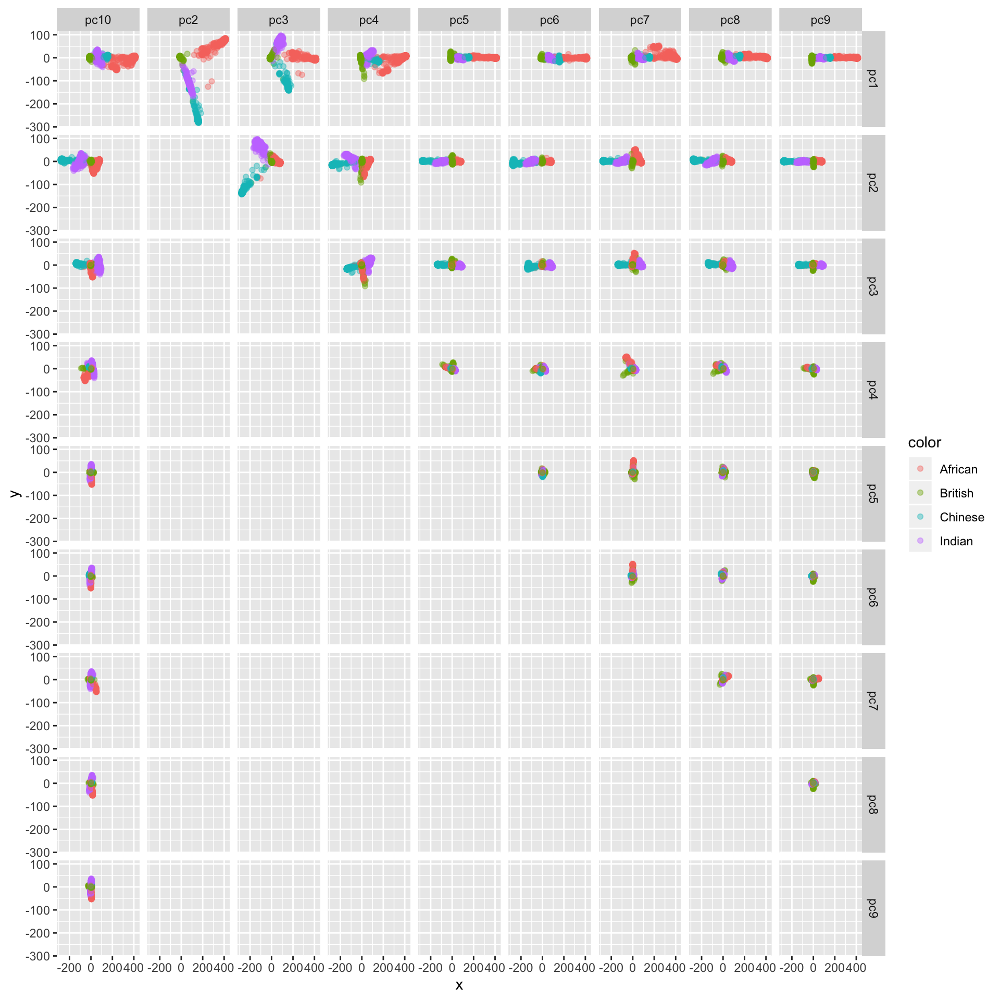
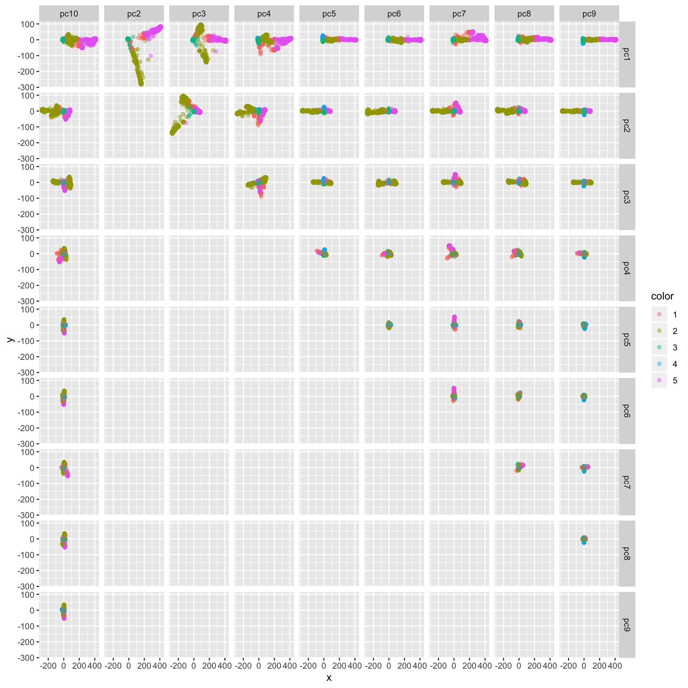
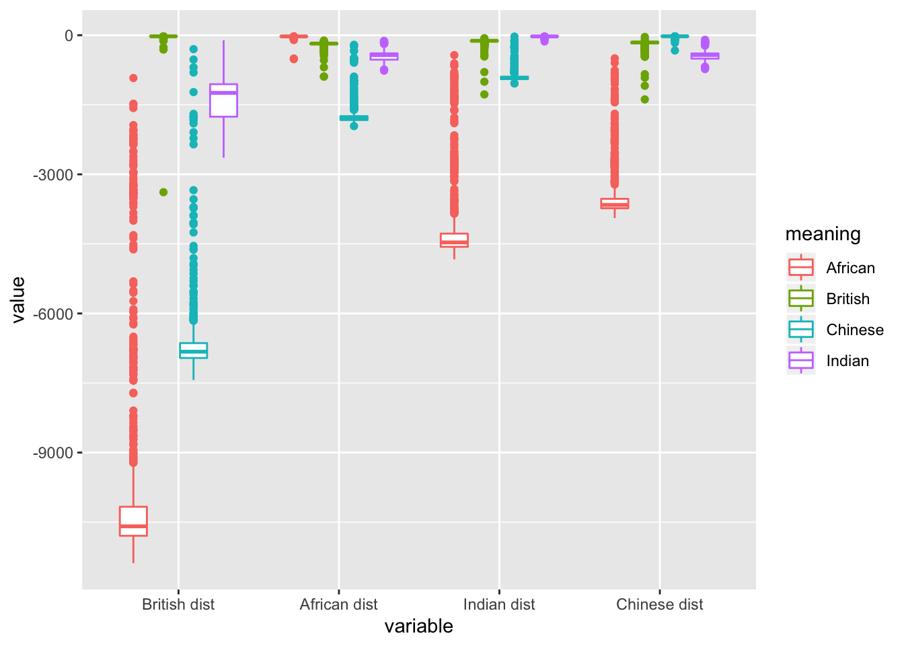
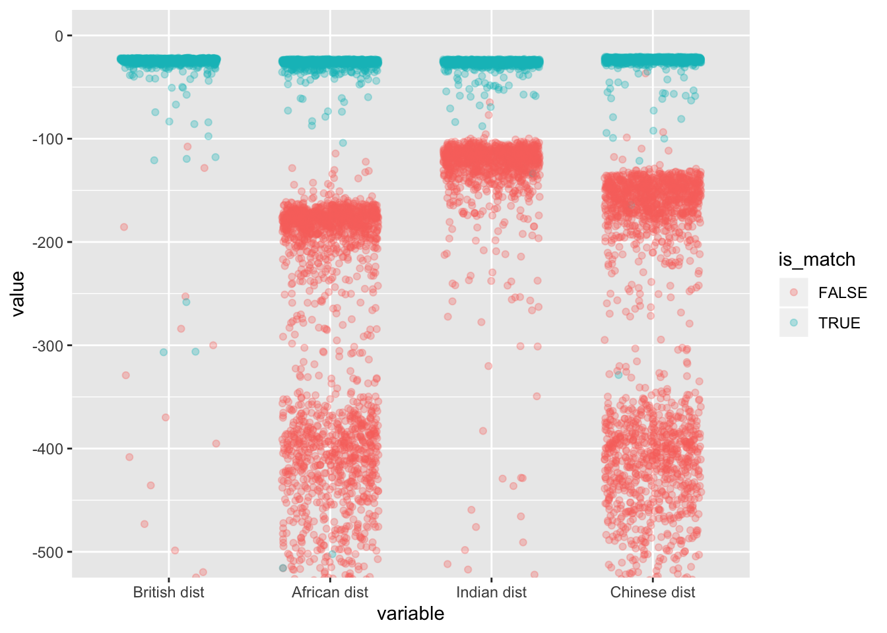
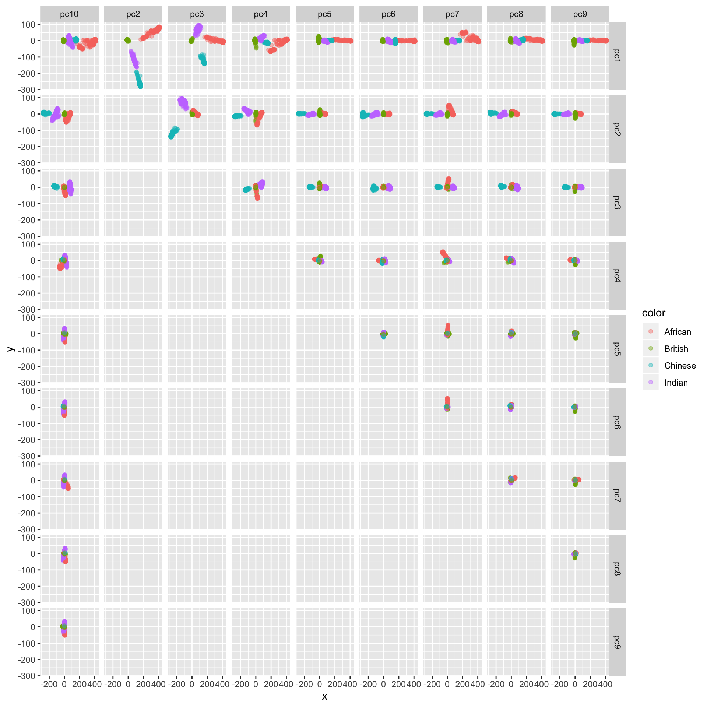

rm(list = ls())
library(dplyr)
library(data.table)
library(pander)
library(ggplot2)
source('../code/rlib_doc.R')The final query YAML is a bit different from ../output/query_martin_et_al_qtraits.yaml. The query input and output is at /vol/bmd/meliao/ukbiobank_query_2.tar on nucleus now.
dat = fread('~/Desktop/ukbiobank_query_2/query_2_out.csv', data.table = F)
data_coding_for_ethnicity = read.delim2('~/Downloads/coding1001.tsv')
target_ethnicity_groups = c('Chinese', 'British', 'Indian', 'African')
data_coding_for_ethnicity = data_coding_for_ethnicity %>% filter(meaning %in% target_ethnicity_groups)
ethnicity_label = dat %>% select(ethnicity_x_instance_0_x_array_0, ethnicity_x_instance_1_x_array_0, ethnicity_x_instance_2_x_array_0)
dat$ethnicity_agg = aggregate_instances(ethnicity_label)
dat = dat %>% filter(!is.na(ethnicity_agg)) %>% filter(ethnicity_agg %in% data_coding_for_ethnicity$coding)
dat = dat %>% inner_join(data_coding_for_ethnicity %>% select(coding, meaning), by = c('ethnicity_agg' = 'coding'))
dat %>% group_by(meaning) %>% summarize(nindiv = n()) %>% pander| meaning | nindiv |
|---|---|
| African | 3135 |
| British | 396058 |
| Chinese | 1465 |
| Indian | 5339 |
pc_mat = dat[, colnames(dat) %in% paste0('pc', 1:10)]
rownames(pc_mat) = dat$eidvis = dat %>% select(pc1, pc2, pc3, pc4, pc5, pc6, pc7, pc8, pc9, pc10, meaning)
subsample = subsample_for_vis(vis$meaning, nmax = 1000)
p = myggpairs(vis[subsample, ] %>% select(-meaning), vis$meaning[subsample], alpha = .4)
p
kmean_assign = as.character(kmeans(vis %>% select(-meaning), centers = 5)$cluster)
p = myggpairs(vis[subsample, ] %>% select(-meaning), kmean_assign[subsample], alpha = .4)
p
Find the center of each cluster and treat it as a multivariate normal and calculate log-likelihood.
ll_list = list()
for(i in unique(vis$meaning)) {
sub = vis %>% filter(meaning == i) %>% select(-meaning)
mean_hat = colMeans(sub)
cov_hat = cov(sub)
tmp = data.frame(ll = mvtnorm::dmvnorm(vis %>% select(-meaning), mean = mean_hat, sigma = cov_hat, log = T))
colnames(tmp) = paste(i, 'dist')
ll_list[[length(ll_list) + 1]] = tmp
}
df_ll = do.call(cbind, ll_list)
df_ll = df_ll %>% mutate(meaning = vis$meaning, eid = dat$eid)
df_ll %>% filter(subsample) %>% melt(id.vars = c('meaning', 'eid')) %>% ggplot() + geom_boxplot(aes(x = variable, y = value, color = meaning))
df_ll %>% head %>% pander| British dist | African dist | Indian dist | Chinese dist | meaning | eid |
|---|---|---|---|---|---|
| -22.19 | -179.2 | -116.9 | -154.7 | British | 1e+06 |
| -22.45 | -170.5 | -110.3 | -133.5 | British | 1e+06 |
| -22.86 | -177.2 | -118.1 | -157.1 | British | 1e+06 |
| -24.8 | -170.7 | -108.1 | -140.8 | British | 1e+06 |
| -27.4 | -247.7 | -153.6 | -193.4 | British | 1e+06 |
| -22.12 | -167.3 | -105.7 | -134.5 | British | 1e+06 |
Get loglik in matched and un-match cases and see how loglik distribute.
df_ll_flat = df_ll[subsample, ] %>% melt(id.vars = c('meaning', 'eid'))
df_ll_flat$meaning = as.character(df_ll_flat$meaning)
df_ll_flat = df_ll_flat %>% mutate(is_match = meaning == stringr::str_remove(variable, ' dist'))
df_ll_flat %>% ggplot() + geom_jitter(aes(x = variable, y = value, color = is_match, group = is_match), height = 0, width = 0.3, alpha = 0.3) + coord_cartesian(ylim = c(-500, 0))
Note: the goal is to remove the ’outlier’s which get mixed with un-matched individuals. **From this plot, we hard code the loglik threshold to -50
ll_cutoff = -50
eid_pass_cutoff = c()
for(pop in unique(df_ll$meaning)) {
dist = paste(pop, 'dist')
sub = df_ll %>% filter(meaning == pop)
eid_pass_cutoff = c(eid_pass_cutoff, sub$eid[sub[, dist] > ll_cutoff])
}
dat_pass_cutoff = dat %>% filter(eid %in% eid_pass_cutoff)vis = dat_pass_cutoff %>% select(pc1, pc2, pc3, pc4, pc5, pc6, pc7, pc8, pc9, pc10, meaning)
subsample = subsample_for_vis(vis$meaning, nmax = 1000)
p = myggpairs(vis[subsample, ] %>% select(-meaning), vis$meaning[subsample], alpha = .4)
p
saveRDS(list(dat_pass_pop_qc = dat_pass_cutoff, dat_ll = df_ll), '../output/query_first_attempt_with_population_qc.rds')